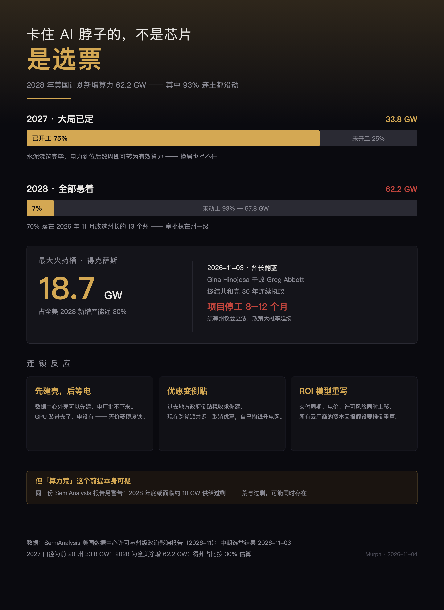

未来两年最硬的约束，不在晶圆厂，在县议会的听证会。芯片是买来的，电是谈来的——买得到的东西，从来不是最难的那件事。
这几年讨论 AI 的瓶颈，习惯性从芯片开始：制程、光刻、HBM、先进封装。
11 月 3 日美国中期选举结束之后，我重新看了一遍 SemiAnalysis 那份关于数据中心许可的测算，感觉这个惯性该改一改了。
未来两年最硬的约束，不在晶圆厂，在县议会的听证会。
SemiAnalysis 把美国的在建和规划项目逐项拆开，得到两个数字：
2027 年 前 20 个州计划交付 33.8 GW
其中约 75% 已经开工
2028 年 全美计划净新增 62.2 GW
其中约 93% 连土都没动这两个数字放在一起，2027 和 2028 就不是「同一件事的两个阶段」，而是两件性质完全不同的事。
2027 的 75% 已经浇筑了水泥。桩打完了、变电站的接入方案批了、变压器订了。这种项目换个州长也拦不住——它们已经从「政治问题」变成了「施工问题」。
2028 的 93% 还在纸上。地可能买了，环评可能刚开始，但审批权在州一级，而 2026 年 11 月正好有 13 个州改选州长。
62.2 GW 里，大约 70% 落在这 13 个州。

得克萨斯占了美国 2028 年计划产能的近 30%，也就是 18.7 GW 左右，各州第一。
然后是那个几乎是剧本写不出来的结果：11 月 3 日，民主党人 Gina Hinojosa 击败现任州长 Greg Abbott，终结了共和党在该州 30 年的连续执政。
更关键的不是选举本身，是它落地的方式。得州的审批变更要走州议会立法，不是新州长签个字就生效。这意味着两件事同时发生：政策方向变了，但程序还要走完——
这段时间里，项目是停着的。业内普遍的估算是 8 到 12 个月。
对一个规划周期 18 个月的行业来说，这等于把整个 2028 交付窗口往后推了一格。
这是整件事里最荒诞、也最真实的一段。
数据中心的壳和给它的电，走的是两条完全独立的审批线。
外壳是建筑许可，县级就能批；电厂和并网是能源监管，跨部门、跨层级，还涉及电网公司排队（美国很多区域的并网排队已经排到 2030 年之后）。
于是出现了一个荒谬但完全合法的组合：
机房建好了
GPU 装进去了
电没批下来这不是段子。这是资本已经在账上、但无法产生任何收入的资产。
行业里管这个叫「stranded asset」（搁浅资产）。我更愿意叫它一个更直白的名字：一堆两亿美元的建筑，和里面一堆没法通电的卡。
2023 到 2025 年，美国地方政府对数据中心的态度基本是「求你来」：税收减免二十年、土地打折、水电配套全包。
2026 年变了。
变化的原因不复杂：电价涨了，噪音有了，水用了，但本地就业没增加几个。一个 300 MW 的园区，运营期可能只需要几百人，其中大部分还是外包。
结果就是选民开始算自己的账。几个数字：
《华盛顿邮报》民调：三分之二美国人反对在本地新建 AI 数据中心
耶鲁 / 乔治梅森 4 月民调：56% 反对，支持仅 15%
地方反对横跨党派：自由派民主党选民约四分之三反对
选举日当晚：33 项限制数据中心的地方公投通过而据公开统计，已经有总额约 2,600 亿美元的数据中心规划项目因为地方反对被取消——注意，是取消，不是推迟。
推迟还有翻盘的可能，取消没有。
跨党派的共识已经形成了：不再给优惠，让它们自己出钱升级电网。这句话在政治上是稳赚不赔的——反正电总要有人出钱，出钱的不是选民最好。
写到这里，逻辑好像很顺：供给被卡住了，所以算力会荒。
但 SemiAnalysis 在同一份报告里还有另一个判断，方向完全相反：
到 2028 年底，美国数据中心可能面临约 10 GW 的供给过剩风险。
同一份报告，一边说 57.8 GW 卡在审批上，一边说会过剩 10 GW。
这两句话不矛盾，它们描述的是同一件事的两个切面：
2027 容量到位了，但需求还没铺开 → 局部闲置
2028 需求起来了，但电批不下来 → 交付延迟
2029 如果都批下来了，一起上线 → 集中过剩所以真正的问题不是「算力荒」，是「算力错配」。
供给不是不够，是来的时间不对。而时间不对的原因，既不是芯片，也不是资本，是审批流程的节奏和 AI 需求的节奏对不上。
芯片可以提前两年下单，电力接入要排六到八年。这两个时钟从来就没同步过，只是以前没人注意到。
判断这件事往哪走，我觉得盯三个东西比盯股价有用。
如果 2027 年会期没有通过限制性立法，那 8–12 个月的停工估算就偏保守；如果通过了，18.7 GW 里有相当一部分要重排。
这是最诚实的指标——它不撒谎，也不受公关影响。队列变短说明有实质性改革，变长说明所有政治承诺都是空话。
33 项通过听起来很多，但没人公布总提案数。如果提了 200 项过了 33 项，那是另一回事；如果提了 40 项过了 33 项，那就是雪崩。
我一直觉得，讨论 AI 的瓶颈最容易犯的错，是把工程问题当成全部。
制程、HBM、封装、互联——这些当然重要，重要到今天还有人在为一张卡的内存来源发愁。
但当资本开支从「几亿美元」变成「几千亿美元」的时候，约束就换了地方：从「能不能造出来」变成「能不能批下来」。
芯片是买来的，电是谈来的。买得到的东西，从来不是最难的那件事。
数据来源：SemiAnalysis 关于美国数据中心许可与州级政治影响的测算（2026 年 11 月）；2026 年美国中期选举结果（11 月 3 日）；《华盛顿邮报》民调、耶鲁/乔治梅森大学民调、NBC/CNBC 出口民调。